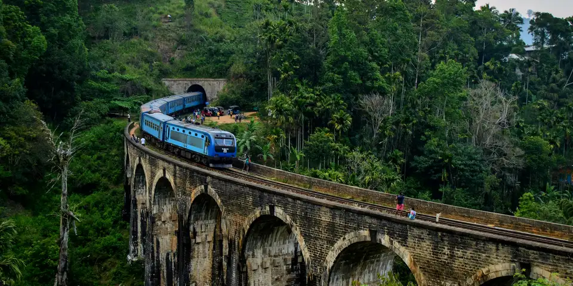

South Asia
Sri Lanka on a budget
Tea country train rides, ancient cities, surf beaches and wildlife on a compact island where cheap guesthouses and rice and curry are never far away.
Photo: Wrobell, CC BY-SA 3.0, via Wikimedia Commons
.jpeg){kind=link}
Classic route
Kandy, train to Ella, then down to Mirissa. 2 weeks.
Before you go
Flights to Kandy: Skyscanner · Kiwi.com · Google Flights
Hostels and guesthouses in Kandy · Ella · Sigiriya · Galle
Tours and tickets: Kandy · Ella
Mobile data: Sri Lanka eSIM
Travel insurance: SafetyWing
How much 17 places in Sri Lanka cost
Daily budgets per person in US dollars: a hostel dorm or simple guesthouse, local food, local transport and the usual entry fees.
-
Kandy
Visit the Temple of the Tooth on the lake, then board the famous hill-country railway toward the tea plantations.
Bed $10 · Food $9 · Getting around $4 · Extras $8
Budget tip: Rice and curry from local 'hotels', the island's simple canteens, costs about $2 for a heaped plate.
$31per day -
Ella
Watch a blue train cross the Nine Arches Bridge, then hike Little Adam's Peak for sunrise over tea-covered hills.
Bed $11 · Food $9 · Getting around $3 · Extras $4
Budget tip: Unreserved second class on the Kandy to Ella train is under $2. Sit on the right side for the best views.
$27per day -
Sigiriya
Climb past ancient frescoes and lion's paws to a palace on top of a towering rock outcrop, above terraced water gardens.
Bed $12 · Food $9 · Getting around $4 · Extras $30
Budget tip: Climb Pidurangala next door for about $3 and a view of Sigiriya itself, ideally at sunrise.
$55per day -
Galle
Stroll the ramparts of a walled Dutch fort town at sunset, past the lighthouse, old churches and boutique-lined streets.
Bed $14 · Food $10 · Getting around $3 · Extras $3
Budget tip: Walking the ramparts is free. Stay just outside the fort for cheaper rooms.
$30per day -
Mirissa
Surf breaks for beginners, whale watching boat trips and sunset from Coconut Tree Hill on the south coast.
Bed $13 · Food $10 · Getting around $4 · Extras $5
Budget tip: Local buses along the coast cost a fraction of tuk-tuk prices and run often between beach towns.
$32per day -
Jaffna
Colorful Tamil temples, island causeways and fiery crab curry make the far north feel like a different country from the south.
Bed $11 · Food $8 · Getting around $4 · Extras $3
Budget tip: Day-trip to Delft Island by public ferry. The train from Colombo is cheap and comfortable.
$26per day -
Adam's Peak
Join pilgrims on a night climb up 5,500 steps to watch sunrise from the summit, as the peak's shadow stretches across the hills.
Bed $12 · Food $9 · Getting around $4 · Extras $2
Budget tip: Climb between December and May, when teahouses on the trail are open. Stay in cheap guesthouses in Dalhousie.
$27per day -
Colombo
Galle Face Green at sunset, the colourful Jami Ul-Alfar Mosque in Pettah's markets, Gangaramaya Temple and hoppers and kottu roti from street stalls.
Bed $15 · Food $9 · Getting around $3 · Extras $3
Budget tip: Use ride-hailing tuk-tuks, which charge fair metered fares. Trains along the coast from Fort station are slow but cost very little.
$30per day -
Nuwara Eliya
Cool hill station of tea factories, colonial bungalows and strawberry farms, gateway to Horton Plains and the walk to World's End.
Bed $12 · Food $9 · Getting around $3 · Extras $6
Budget tip: Take the scenic train from Kandy and book reserved seats early. Nights are cold, so check guesthouses have hot water and extra blankets.
$30per day -
Dambulla Cave Temple
Five painted cave shrines packed with Buddha statues and ceiling murals, perched on a granite outcrop with views toward Sigiriya.
Bed $11 · Food $8 · Getting around $4 · Extras $8
Budget tip: Combine with Sigiriya from a single base. Wear clothes covering shoulders and knees, and leave shoes at the counter near the stairs.
$31per day -
Trincomalee
Deep natural harbour, the clifftop Koneswaram Temple, white sands at Nilaveli and snorkelling around coral-fringed Pigeon Island.
Bed $13 · Food $9 · Getting around $4 · Extras $5
Budget tip: Come between May and September when the east coast is calm. Share a boat to Pigeon Island to split the trip cost.
$31per day -
Arugam Bay
A relaxed surf town on the east coast with point breaks, beach shacks and lagoon safaris, best from May to September.
Bed $12 · Food $10 · Getting around $4 · Extras $6
Budget tip: Surf lessons and board hire are cheap. Visit in the east coast season, which is the opposite of the south coast's.
$32per day -
Knuckles Range
Trek through cloud forest and tea villages in a misty mountain range, sleeping in homestays far from the tourist crowds.
Bed $12 · Food $9 · Getting around $5 · Extras $8
Budget tip: A guide is required for most trails. Base yourself in Kandy or a village homestay with home-cooked meals.
$34per day -
Hiriketiya
Small horseshoe bay near Dikwella with gentle surf breaks for beginners, palm-shaded cafés and a laid-back village feel.
Bed $14 · Food $10 · Getting around $4 · Extras $6
Budget tip: Rooms in Dikwella village cost less than those on the bay. Board rentals are cheapest by the half day.
$34per day -
Anuradhapura
Giant white stupas and the sacred Bodhi tree, grown from a cutting of the Buddha's own, mark Sri Lanka's first capital.
Bed $11 · Food $8 · Getting around $4 · Extras $25
Budget tip: Cycle around the site rather than hiring a tuk-tuk. Pilgrims dress in white, so wear modest clothing.
$48per day -
Polonnaruwa
Medieval royal capital of palace ruins, lotus pools and the Gal Vihara's colossal granite Buddhas, explored easily by bicycle.
Bed $11 · Food $8 · Getting around $4 · Extras $25
Budget tip: Rent a bike from your guesthouse to cover the spread-out site. Buy the ticket at the museum and visit early to avoid midday heat.
$48per day -
Yala National Park
Scrub jungle and lagoons famous for leopards, plus elephants, sloth bears, crocodiles and huge flocks of wading birds near the southeast coast.
Bed $14 · Food $9 · Getting around $5 · Extras $40
Budget tip: Share a jeep from Tissamaharama to split costs. Block 1 gets crowded, so consider less busy zones; the park closes for a period around September.
$68per day
Know before you go
Sri Lanka on a budget: the basics
Currency
$1 = 331 LKR
Sri Lankan rupee
| Dollars to LKR | LKR to dollars | ||
|---|---|---|---|
| $1 | 331 LKR | 100 LKR | $0.302 |
| $5 | 1,653 LKR | 500 LKR | $1.51 |
| $10 | 3,307 LKR | 1,000 LKR | $3.02 |
| $20 | 6,614 LKR | 5,000 LKR | $15.12 |
| $50 | 16,534 LKR | 10,000 LKR | $30.24 |
| $100 | 33,068 LKR | 50,000 LKR | $151 |
A typical day here (about $31) is roughly 10,000 LKR.
Mid-market rate on 2026-10-05. Cash machines and exchange desks pay a little less.
Getting around
Trains are slow but cheap, and the hill country line through Kandy and Ella is popular, while buses run often between towns. PickMe and Uber work in Colombo and other cities for tuk-tuks and cars. Reserved seats on the Kandy to Ella train sell out, so book ahead or take an unreserved ticket.
Where to sleep
Family guesthouses and homestays are the best value, with hostel dorms in Colombo, Ella and the south coast beach towns.
What to eat
- Rice and curry: rice with several small vegetable and meat curries
- Hoppers: bowl-shaped rice flour pancakes, often with an egg
- Kottu roti: chopped flatbread stir-fried with vegetables and meat
- Ceylon tea: strong local black tea, often served with milk
Money
Cards work at larger hotels, but most daily spending is cash, and ATMs are easy to find. Tuk-tuk drivers often quote high, so agree on a fare first or use an app, and small tips are welcome.
Phone data
Dialog and Mobitel sell tourist SIMs at the airport with passport registration, and coverage is good across most of the island.
Heads up
Posing with your back to a Buddha statue and visible Buddha tattoos are considered disrespectful.
Sri Lanka travel: quick answers
How much does a day in Sri Lanka cost on a budget?
About $31 a day for one person, from $26 in Jaffna to $68 in Yala National Park. That covers a hostel dorm or simple guesthouse, local food, local transport and the usual entry fees, so a week runs about $217 before flights.
When is the best time to visit Sri Lanka?
December to April is the best time, with the most reliable weather for getting around.
What is the cheapest place to visit in Sri Lanka?
Jaffna, at about $26 a day. Colorful Tamil temples, island causeways and fiery crab curry make the far north feel like a different country from the south.
How long do you need in Sri Lanka?
Kandy, train to Ella, then down to Mirissa. 2 weeks.
How much is $1 in Sri Lanka?
One US dollar is about 331 Sri Lankan rupee (LKR), going by the mid-market rate on 2026-10-05. So $20 is roughly 6,614 LKR, and a typical budget day of $31 comes to about 10,000 LKR.
How do you get around Sri Lanka cheaply?
Trains are slow but cheap, and the hill country line through Kandy and Ella is popular, while buses run often between towns. PickMe and Uber work in Colombo and other cities for tuk-tuks and cars. Reserved seats on the Kandy to Ella train sell out, so book ahead or take an unreserved ticket.
What food should you try in Sri Lanka?
Rice and curry, rice with several small vegetable and meat curries. Hoppers, bowl-shaped rice flour pancakes, often with an egg. Kottu roti, chopped flatbread stir-fried with vegetables and meat. Ceylon tea, strong local black tea, often served with milk.
Planning around the seasons? See where to go in December, or compare the cheapest countries nearby.
Itineraries through Sri Lanka
- Sri Lanka Island Loop 21 days · $1,981
Similar budgets nearby
- Nepal $27/day
- India $23/day
- Bangladesh $22/day
- Maldives $93/day